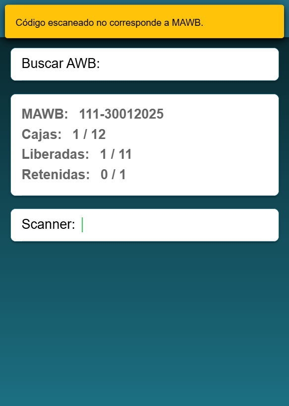

Ejemplos de diseños implementados para procesos logísticos utilizando PDA (Personal Digital Assistant).
Diseño de login

Página de administrador

Página de búsqueda

Página de acciones

Carga de imagen

Alerta
Confirmación

Ejemplo de diseño implementado para página web.